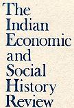

 The
Indian Economic
and Social History Review
Volume XLII Number 2 April-June 2005
CONTENTS
CLARE ANDERSON/ 'The Ferringees are flying-the ship is ours!': The
convict middle passage in colonial South and Southeast Asia,
1790-1860, p. 143
NILE GREEN/ Mystical missionaries in Hyderabad State: Mu'in Allah
Shah and his Sufi reform movement, p. 187
ROSINKA CHAUDHURI/ Hemchandra's Bharat Sangeet (1870) and the
politics of poetry: A pre-history of Hindu nationalism in Bengal?,
p. 213
Review Article
- Dipesh Chakrabarty, Provincializing Europe: Postcolonial Thought
and Historical Discourse and Habitations of Modernity: Essays in the
Wake of Subaltern Studies by Hari Vasudevan, p. 249
Book Reviews
- Neera Chandhoke, The Conceits of Civil
Society, by Rajen Harshe, p. 257
- Sangeeta Kamat, Development Hegemony-NGOs and the State in
India, by Nivedita Menon, p. 259
Back to the top.
Indian
Economic and Social History Review page | H-Net Asia - Journals
(Tables of Contents) | South
Asia Journals and Newspapers
Webbed by Philip
McEldowney
Last Update -
|